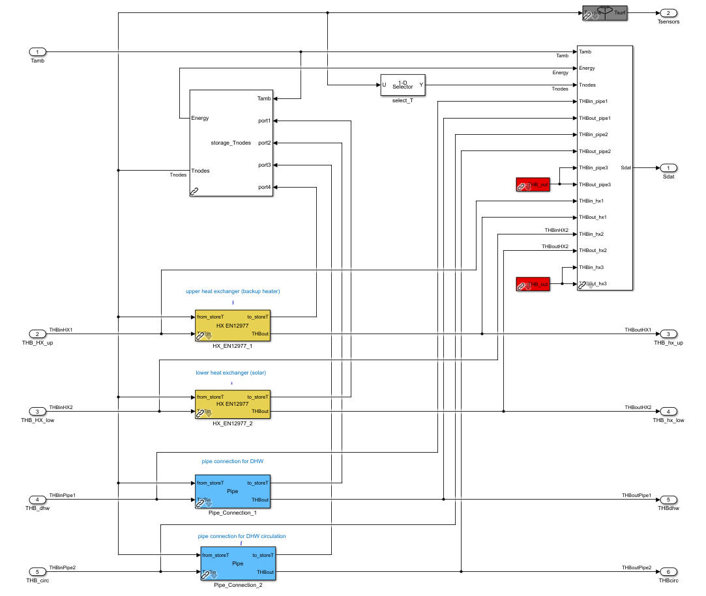
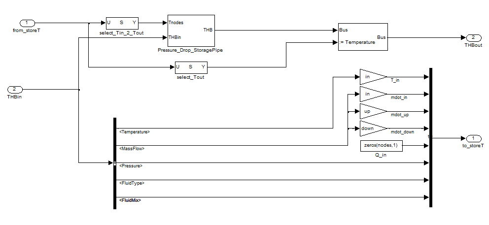
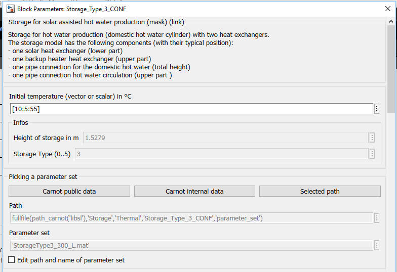
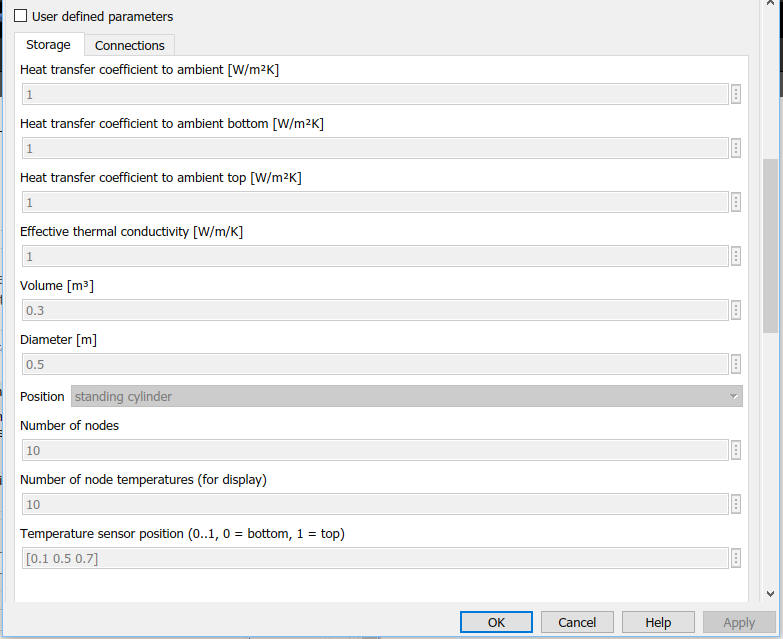

Storage_Type_N
Path: CARNOT/Storage/Thermal
Purpose:
Multiport model for storage with heat exchanger(s) and direct connections.
Description:
The basic concept is a multiport one-dimensional model. The storage is
connected to other CARNOT components by a variable number of port blocks.

“Look under Mask” of the Storage_Type_3 model. The pipe connection and
the heat exchangers can be seen.
These ports "translate" the energy flow in the THB bus to the energy and mass
balance of the storage. The type of port can be a pipe ending at the storage
wall and releasing the fluid in the storage (see
Pipe). Or it can be a heat
exchanger charging or discharging the storage with an energy flow (see
Heat_Exchangers).
Pressure drop and pressure changes due to static height are calculated in
the ports.

Figure: Principle of a port, example of a pipe connection
Parameters and Dialog Box
The parameters represent the geometric and thermodynamic data of the storage. The top mask defines also the number of ports, the number of temperature sensors and the number of nodes.


The initial temperature can be a scalar value which means one temperature for
all nodes. It may also be a vector with the length “nodes”. In this case each
node is initialized with its individual temperature. The first element in the
vector is the temperature for the bottom node.
Geometric values, intial temperatures and the positions of the connections are
determined in the callback function
CarnotCallbacks_StorageTypeN.
Ports: Parameters of the ports are described in the chapters of the ports:
sfun_storageTnodes
This s-function is the basic model of the storage. It divides the storage in N nodes where node 1 is at the bottom and node N at the top. For details of the mathematical model and the inputs and outputs see sfun_storageTnodes.html.
Examples:
Open the example explorer from the Matlab command window
ExampleBrowser
or load the examples via the CARNOT library.
Verification
Characteristics:
| Direct Feedthrough | : | Yes |
| Sample Time | : | Inherited from driving block |
| Vectorized | : | No |